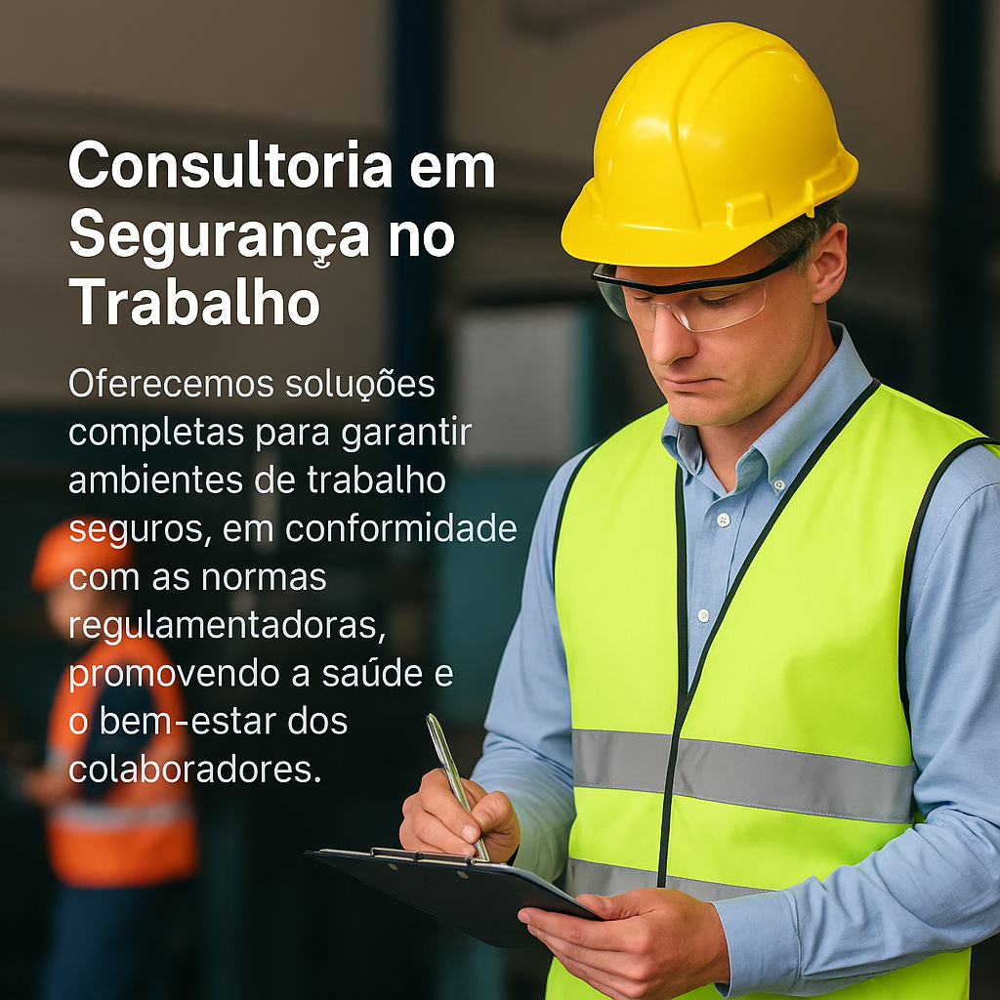

Consultoria em Segurança no Trabalho
Oferecemos soluções completas para garantir ambientes de trabalho seguros, em conformidade com as normas regulamentadoras, promovendo a saúde e o bem-estar dos colaboradores.
Serviços Oferecidos
- GRO-PGR (NR-01): Programa de Gerenciamento de Riscos para antecipação, reconhecimento e controle de riscos ocupacionais.
- Fatores de Riscos Psicossociais: Avaliação e identificação de fatores que impactam o bem-estar mental no ambiente de trabalho.
- LTCAT: Laudo Técnico das Condições Ambientais do Trabalho.
- Laudo de Periculosidade
- PCMSO: Programa de Controle Médico de Saúde Ocupacional.
- PGRSS (Lei 12.305): Plano de Gerenciamento de Resíduos Sólidos.
- PGR (NR-22): Programa específico para atividades de mineração.
- Investigação de Acidentes: Identificação de causas e proposição de medidas corretivas.
- PPP: Perfil Profissiográfico Previdenciário para fins de INSS.
- PGRSS (NR-32): Para atividades hospitalares, com foco em resíduos perigosos.
- Perícia Técnica em SST: Avaliações e pareceres técnicos especializados.
- AVCB: Auto de Vistoria do Corpo de Bombeiros.
- CIPA (NR-05): Comissão Interna de Prevenção de Acidentes.
- CIPAMN (NR-22): Comissão Interna de Prevenção de Acidentes na Mineração.
- CIPTR (NR-03): Comissão Interna para Prevenção de Situações de Grave e Iminente Risco.
- NR-10: Segurança em Instalações Elétricas.
- SEP - NR-10: Sistema Elétrico de Potência.
- NR-18: Condições e Meio Ambiente de Trabalho na Indústria da Construção.
- NR-23: Brigada de Incêndio e medidas de combate.
- NR-33: Segurança e Saúde nos Trabalhos em Espaços Confinados.
- NR-35: Trabalho em Altura.